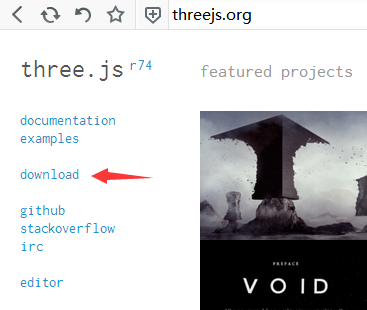
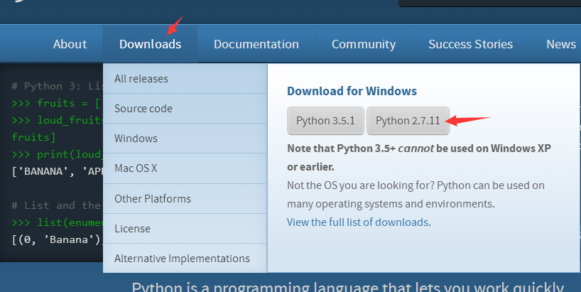
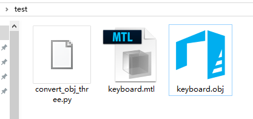
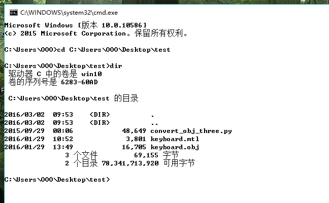
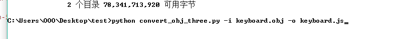
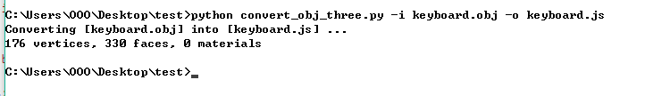
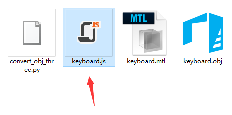

three.js obj转js的详细步骤 convert_obj_three.py的用法

three.js是最近非常流行的一个前端webgl库。
js格式的模型文件是three.js中可以直接加载的文件。使用THREE.JSONLoader()直接加载，而不需要引用其它的loader插件。
obj格式转js格式使用的是threejs.org官方提供的一个convert_obj_three.py的工具，这个工具的使用需要安装python环境。
文件准备：
convert_obj_three.py 在官网的下载的包中./utils/converters/obj/目录下可以找到。打开 three.js官网 ，点击如下图所示download链接，即可下载。下载好后解压，然后进入utils/converters/obj/下的文件夹即可找到。
也可以在github上面 https://github.com/mrdoob/three.js/tree/master/utils/converters/obj 这里可以找到，点击conver_obj_three.py打开编辑页面，然后你在自己电脑上新建一个convert_obj_three.py的文本文件，把github上面那个内容拷贝进去保存就可以使用，
提示：convert_obj_three_for_python3.py 这个也是同样的转换工具，只不过是给python 3.X版本的环境使用的。convert_obj_three.py 这个是给python2.X 的版本使用的，建议使用python2.6以上的环境。
准备python环境
进 https://www.python.org/ 的官网

点击如图所示，下载python-2.7.11.msi文件(我是windows系统)。然后按提示安装。
安装过程中有一项记得勾选，那就是把python目录添加到环境变量中。如果没添加那就自己手动添加。
转换过程
将convert_obj_three.py和要转换的obj格式的文件拷贝到一个目录下。如果有mtl文件的话也要带上。

打开命令行工具，把目录切换到刚刚所建的文件夹，我建的文件夹是test

敲入命令dir可以列出当前文件夹中所包含的内容
执行命令
用文本编辑工具打开convert_obj_three.py，可在文件顶部发现这样的注释。这个是教我们怎么使用这个工具。我们可以参照它
"""Convert Wavefront OBJ / MTL files into Three.js (JSON model version, to be used with ascii / binary loader)
-------------------------
How to use this converter
-------------------------
python convert_obj_three.py -i infile.obj -o outfile.js [-m "morphfiles*.obj"] [-c "morphcolors*.obj"] [-a center|centerxz|top|bottom|none] [-s smooth|flat] [-t ascii|binary] [-d invert|normal] [-b] [-e]
Notes:
- flags
-i infile.obj input OBJ file
-o outfile.js output JS file
-m "morphfiles*.obj" morph OBJ files (can use wildcards, enclosed in quotes multiple patterns separate by space)
-c "morphcolors*.obj" morph colors OBJ files (can use wildcards, enclosed in quotes multiple patterns separate by space)
-a center|centerxz|top|bottom|none model alignment
-s smooth|flat smooth = export vertex normals, flat = no normals (face normals computed in loader)
-t ascii|binary export ascii or binary format (ascii has more features, binary just supports vertices, faces, normals, uvs and materials)
-d invert|normal invert transparency
-b bake material colors into face colors
-x 10.0 scale and truncate
-f 2 morph frame sampling step
- by default:
use smooth shading (if there were vertex normals in the original model)
will be in ASCII format
original model is assumed to use non-inverted transparency / dissolve (0.0 fully transparent, 1.0 fully opaque)
no face colors baking
no scale and truncate
morph frame step = 1 (all files will be processed)
- binary conversion will create two files:
outfile.js (materials)
outfile.bin (binary buffers)
参考上面的注释，我们可以使用命令
python convert_obj_three.py -i keyboard.obj -o keyboard.js
来处理我们的obj文件。我们敲入命令

回车：

如图所示，我们的模型已经转换成功了。

我们在刚刚所建的文件夹中找到这个keyboard.js文件。
使用js格式文件：
在刚刚的convert_obj_three.py文件中，我们还会发现如下的注释：
--------------------------------------------------
How to use generated JS file in your HTML document
--------------------------------------------------
<script type="text/javascript" src="Three.js"></script>
...
<script type="text/javascript">
...
// load ascii model
var jsonLoader = new THREE.JSONLoader();
jsonLoader.load( "Model_ascii.js", createScene );
// load binary model
var binLoader = new THREE.BinaryLoader();
binLoader.load( "Model_bin.js", createScene );
function createScene( geometry, materials ) {
var mesh = new THREE.Mesh( geometry, new THREE.MeshFaceMaterial( materials ) );
}
...
</script>
我们就参照这注释里边的方式在网页中加载这个模型吧。
OK！